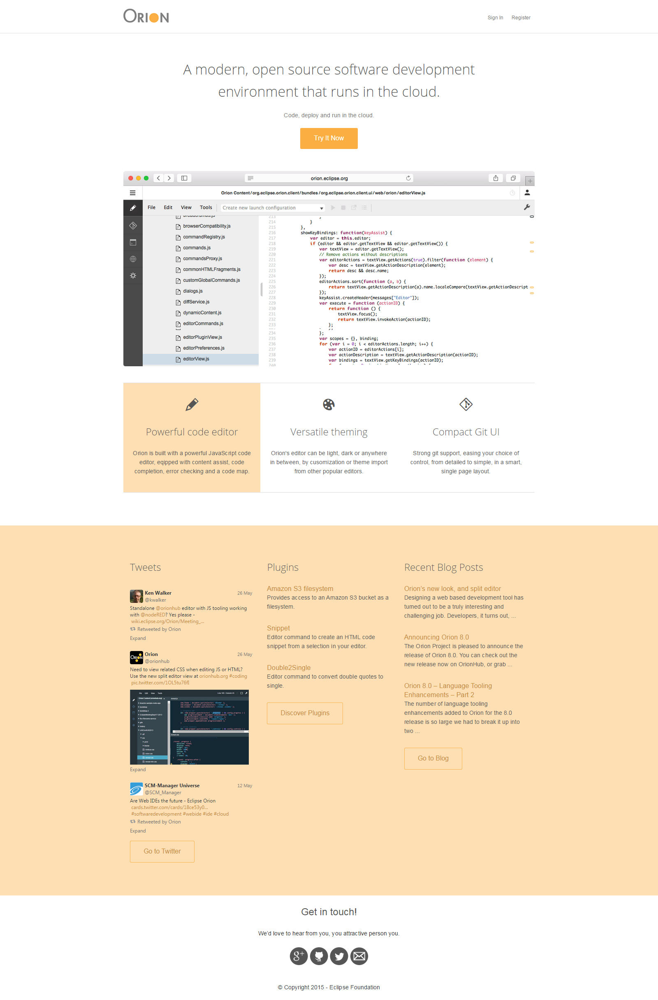

Orion Web IDE landing page & editor styles import
| Project timeline: | January 2015 - May 2015 |
|---|---|
| Role: | JavaScript developer, UX & Design person |
| URL: | https://orionhub.org |
| Github URL: | https://github.com/eclipse/orion.client |
| Tools used: | JavaScript, HTML, Less, CSS, Grunt, RequireJS |
During my internship at IBM Canada as a Javascript developer I worked on the Orion Web IDE project team. Orion is an open-source project and a part of Eclipse family of projects. It is also part of a larger IBM Bluemix project - a cloud-based platform for building, running, deploying and managing applications.
I undertook the redesign of the landing and registration pages used for OrionHub, a website that allows those interested in Orion to try it out. These pages are fully responsive, utilizing a flexbox-based grid system which I made specifically for this project.

I was also in charge of functionality and UX relating to editor theming. I implemented theme importing from Sublime Text, Brackets and Eclipse. Themes can also be exported in a form of a JSON file. Themes can be imported, modified and exported from Orion's theme editing interface and shared with other Orion users. They can also be created from scratch in the same interface.